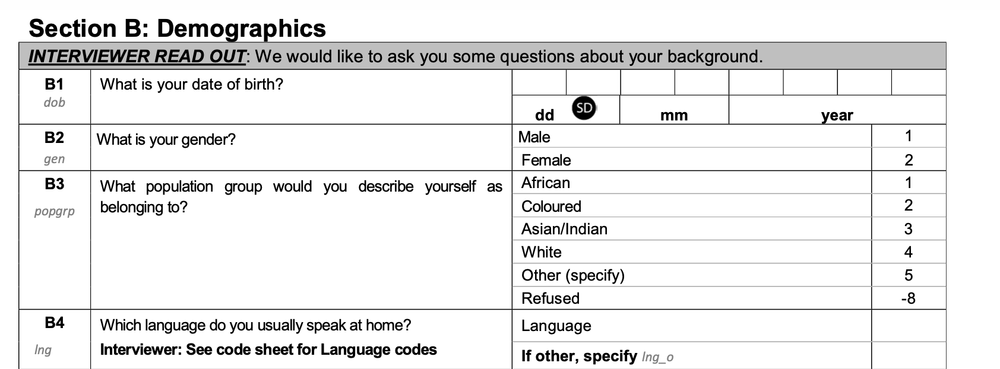
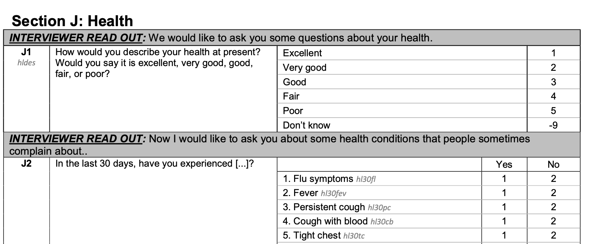

EKT 813: Quants
Project 1
*Due date: March 13, 17:00. Please, email the project to me. The project submission should contain a ‘README’ file that describes the exact steps needed to get to the data and results that you are using for the analysis: where to get the data, which files, which ‘program’ files to run in which order to get all the data and all of the results. All program files should have comments describing the steps being undertaken, explaining variable definitions and so on. The project submission should also contain a ‘Report’ file that presents the information requested in the project in the format requested.
You are allowed/encouraged to work in groups of three. We will take a few minutes of class for these groups to be created. Each group will get one of the waves of data - there are five. Thus, multiple groups will work on the same wave of data.
As I have noted, I will not force you to use any specific software.
Introduction
Research into health demand in South Africa is limited, primarily because there is minimal publicly available health related data. Given the desire to implement an NHI, however, it is necessary to develop a larger evidence base on the demand for health care and begin to consider what an NHI might do to the demand for services. Over this semester, we are going to begin to develop some descriptive and regression evidence related to the demand for health care.
South African research has highlighted inequalities in access to health care (Gordon, Booysen, and Mbonigaba 2020; Mhlanga and Garidzirai 2020), costs and benefits of health care services and financing (Ataguba and Mcintyre 2012), use of health care and/or medical aid access (Omotoso and Koch 2017) and out-of-pocket payments (Koch and Setshegetso 2021). Some of those inequalities have declined over the last few decades (Day and Zondi 2019). Related research has highlighted quality problems (Honda et al. 2015) and poor public perception associated with the public sector (Burger and Christian 2020). Much of that research has also argued for the furtherance of universal health care (Ataguba 2016), primarily through a national health insurance scheme. Currently, most care received in the private sector is for those with access to medical aids – as health insurance is called in the country – although private healthcare is purchased by those without medical aids (Statistics South Africa 2023). However, research on the private sector has suggested that its care is very expensive, at least relative to income levels (Lorenzoni and Roubal 2016), may not generate the health outcomes expected (Koch and Slabbert 2012) and suffers from supplier-induced demand, although there is no empirical evidence of it (Erasmus and Kean 2018).
Data
Unfortunately, data on illness in South Africa is generally limited to being diagnosed with a chronic condition, although there are also measures of limitations in activities of daily living, as well as self-assessed health. Some of the surveys include questions related to where consultations would normally take place in the event someone fell ill.
The survey with the most extensive health information is the National Income Dynamics Study (Southern Africa Labour and Development Research Unit 2008, 2011, 2012, 2015, 2018). All five waves contain rather similar questions related to health; of particular interest for this research are questions related to whether someone has been ill in the last 30 days, and, if so, what was done to treat it. An unfortunate problem with the NIDS data is that it does not capture income or expenditure as well as one would like, although they impute missing income, which helps some.
In terms of the data that will be used for the analysis, we will capture all (adult-focused)1 health and healthcare seeking information (including illness, behaviours, medical aid coverage and/or medical expenses), as well as standard socio-demographic controls, such as: income/expenditure, education, age, population group, gender. Yes, there is likely to be more information that is useful. For our purposes, however, this is enough.
Project I
As implied by the preceding discussion, we are going to focus our attention on capturing data and presenting some rather simple pieces of information. I begin by pointing out some of the basic information, such as the demographic information, which is in Section B of the adult file. The questionnaire looks something like the following.

The health questions are also in their own section. It is Section J. I have also created a basic screenshot to help you get started.

Data development
For this project, you are expected to pull demographic information: age, gender, population group, education, income,2 province, and marital status. Also, you should pull the responses for a particular subset of the different health questions in Section J. In particular, I would like you to capture medical aid status, difficulties associated with daily living, whether they were ill in the last 30 days, whether they consulted a health professional, when, where, whether there was a fee and who paid it. Thus, your final dataset will have a small number of variables; somewhere near 20.
Data presentation
I would like to see a data description table. It should list all the variable names in the first column - you are encouraged to use your own variable names, since you will have to change the initial data to work with it. It should have a brief description/definition in the second column. The third and fourth columns should contain the total number of usable observations and the total number of missing observations.
Your report should also include two illustrations.3 The first should give the reader an idea of medical aid coverage by age, population group and gender. The second should explore public vs private vs other consultation with a health professional, again, by age, population group and gender.
Report
Your report should describe what you did to get to that table and figure(s); however, keep in mind that the README is an exact statement of how. Thus, we are after an overview and highlights of the process. The report should also offer a useful summary of the table; again, the table is ‘exact’, so we do not want it repeated in the text. Instead, we want an overview and highlights.4 I would also like to see some interpretation of the illustrations. Again, I do not want to see an exact description with this percentage for this age, population group and gender. Rather, I want an overview and highlights. Be sure to site the data, and any software and user developed packages that were used to get there. Please, feel free to present the report an html file and the readme as most anything (although markdown, html or text is probably the easiest). Given thatyou do not really need to worry about whether illustrations or tables fit nicely - admittedly, I would rather not see figures and tables that are overly wide requiring me to scroll all over back and forth.
Finally, it is impossible to give a page/word limit, but I would think a few paragraphs to outline what you did to get the data together, another few to get the table together another few to get the figures together and a final few to describe each set of ‘results’. In other words, not that much.
References
Footnotes
NIDS has a separate child survey that would be interesting to examine, but will not be the focus of this research, given the time and other resources available.↩︎
This one is a bit complicated to develop, but do your best and look through the technical NIDS documents to see if you can find something like an imputed or full value in the data.↩︎
Note: it may take more than one picture to present any specific idea.↩︎
To get examples of this, feel free to read papers making use of this or any other data, or even technical documents about the data.↩︎